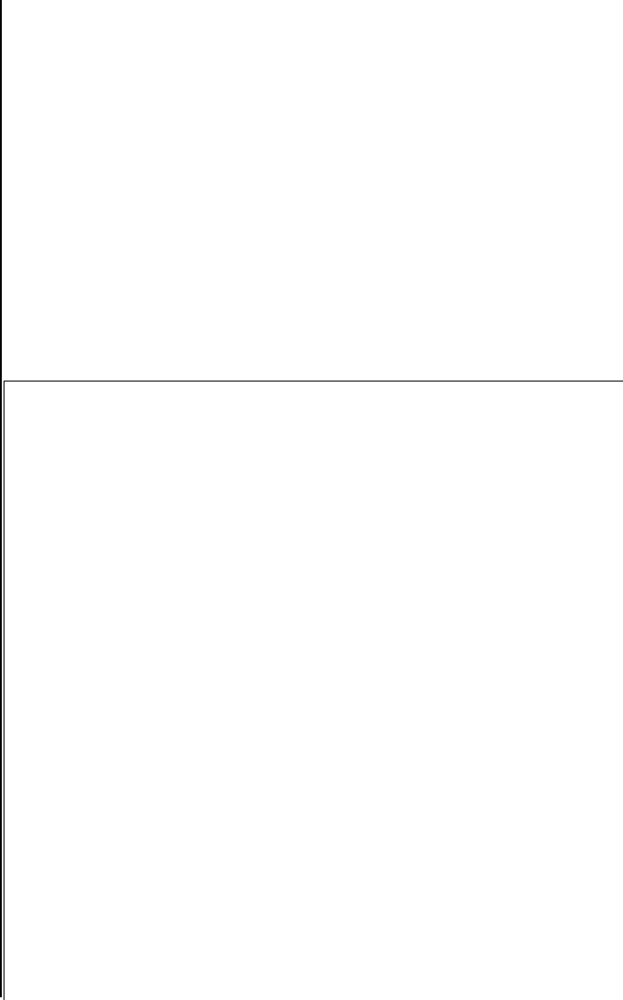
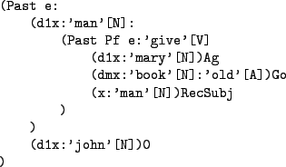

|  |
The processing module's input format is a representation of the linguistic expression to be generated; its form is based on the representation of underlying structures given in Dik (1997). The processing module parses the input entered by the user (or potentially coming from a different source) and creates an internal representation (see Fig. 6) which is then converted into the output format of the processing module, a Prolog representation of the input, which is used by the grammar module.
|
|
Figures 5 and 7 show the structural similarity of underlying structures in FG and FDG; both representations are nested parentheses, which can also be represented as trees (cf. Fig. 6). Since these representations can be described and processed with the same mechanisms, and representations on all levels of FDG have a common scheme (Hengeveld & Mackenzie, 2006, 671), support for FDG representations is easy to add by supplying ANTLR definitions for representations on the individual levels in FDG, like the Interpersonal Level (IL) and the Representational Level (RL, cf. Fig. 7, 8 and 9). Such an ANTLR grammar definition alone provides a validator for the formal structure of IL and RL representations. With grammar files for the IL and the RL implemented and having an internal representation of the input, alternative processing is possible too, e.g. output of typeset representations of the underlying structures with or without indentation.
|  |